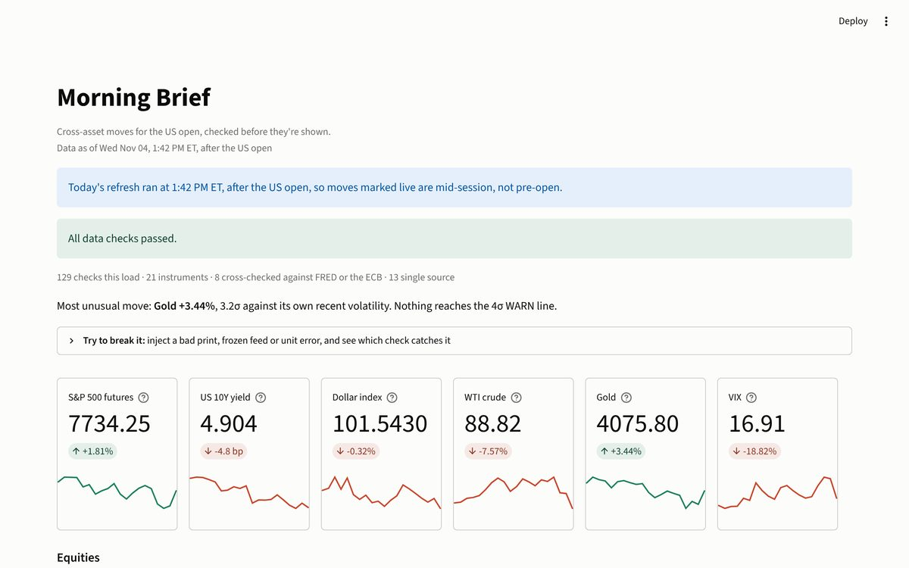

Morning Brief
A public rebuild of the pre-open market dashboard I built during my UBS Global Markets internship. It is refreshed every weekday before the open.
What it shows: Building a scheduled data product that checks its own inputs (freshness, gaps, implausible moves, cross-source disagreement) before showing a number.